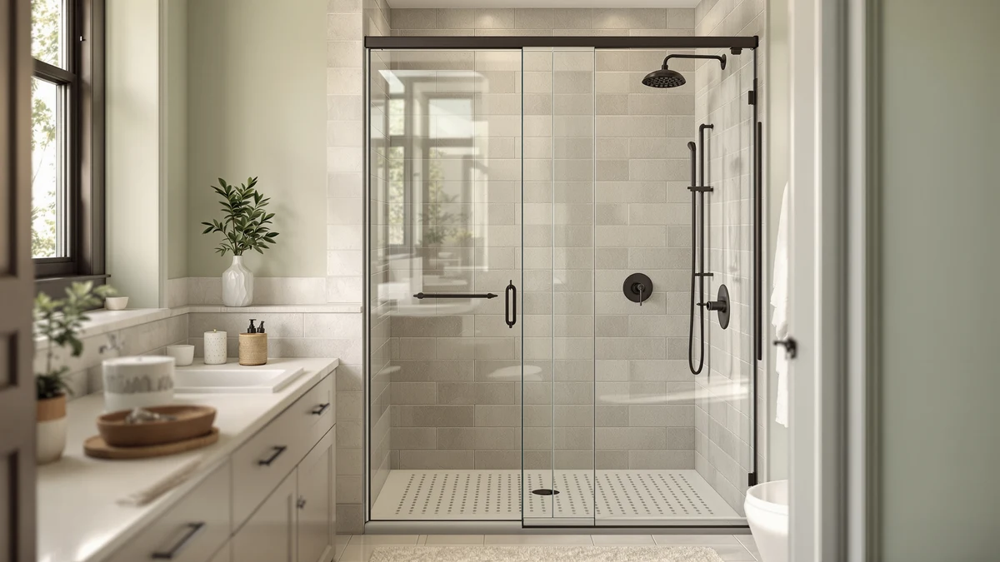

Shower Enclosure vs Cubicle (2026)
Prices and picks verified as of September 2026. Independent, reader-supported reviews.


Things to Know Before You Buy
- A shower enclosure is a self-contained unit with its own base, walls (or panels) and doors, while a cubicle uses your existing bathroom walls with a door added to close off the opening.
- Enclosures cost more upfront but simplify installation when you are building a bathroom from scratch or replacing a full unit.
- Cubicles are cheaper to retrofit into an existing niche, since you are only buying and fitting a door.
- Frame material and glass thickness matter more for long-term durability than which category you pick.
- Measure your bathroom opening before comparing prices, since the two options are not always interchangeable in the same footprint.
Shower enclosure vs cubicle is the first fork in the road for anyone replacing an outdated stall, and the right pick depends on whether you are starting from a bare bathroom or working around walls that already exist. Both options use the same tempered glass and aluminum hardware you will find across the market, but they solve different problems: one builds a shower from the ground up, and the other closes off a space you already have.
We compared specs, published pricing and verified owner reviews across both categories to sort out where each one earns its keep. Neither option wins across the board. Below, we break down build quality, price and day-to-day use so you can match the choice to your bathroom instead of guessing.
Quick Answer
A shower enclosure is the better call when you are renovating a bathroom from scratch or replacing a stall that has structural walls in poor shape, since it comes as a complete unit with its own base and panels. A cubicle setup wins when your existing walls and base are sound and you need only a new door, because you skip the cost of a full unit. Buyers on a tight budget and a working niche should lean cubicle; buyers doing a full remodel should lean enclosure.
What is Shower Enclosure?
A shower enclosure is a complete, self-contained shower unit. It typically includes a molded base, tempered glass panels or walls, and one or more sliding or pivoting doors, all designed to be installed as a single package. Corner enclosures are the most common configuration sold on Amazon, fitting into a right-angle space with two open walls, though alcove and quadrant versions exist for other layouts.
Because the enclosure supplies its own base, you are not relying on existing tile or a pre-formed pan to be square or watertight. That makes it the more forgiving option when a bathroom is being gutted or when the old shower pan has failed. Frames are usually aluminum with a chrome, black or brushed nickel finish, and glass thickness runs from 4mm on budget models up to 6mm on sturdier ones.
The tradeoff is footprint and cost. An enclosure needs a defined amount of floor space and generally costs more than a standalone door because you are paying for the base and side panels in addition to the door itself. Owners researching a shower enclosure vs cubicle decision for a full remodel tend to land here specifically because the unit handles walls, base and door as one purchase.
What is Cubicle?
A cubicle, in this context, refers to a shower stall built into an existing niche or alcove using the walls and base you already have, closed off with a standalone door. Instead of buying a full enclosure, you are buying only the door, most often a neo-angle or pivot design sized to fit your specific opening.
This approach depends entirely on the condition of what is already there. If your tile walls and shower pan are sound, square and free of leaks, a cubicle door is a fast, low-cost way to modernize the stall without touching plumbing or flooring. Reviewers consistently note that neo-angle doors are the most common cubicle retrofit because they work with the diagonal corner cut that many older stalls already have.
The catch is that a cubicle door only solves the door problem. If the base is cracked, the walls are out of square, or the framing behind the tile has water damage, a new door will not fix any of that, and you are better off with a full enclosure. Owners comparing shower enclosure vs cubicle prices for a simple refresh usually find the cubicle route wins on cost precisely because it skips those extra components.
Head-to-Head: Build Quality & Durability
Build quality in a shower enclosure vs cubicle comparison comes down to frame material, glass thickness and how many seals the unit relies on to stay watertight, not the category itself. Enclosures like the ENSO SENKA and BATHWILLER models package a molded base with the door and side panels, which means fewer field-cut seams and fewer places for water to find a gap. That single-source construction tends to hold up well over years of daily use, according to verified buyer feedback on comparable models.
Cubicle doors, such as the Noirpierre neo-angle units, put all the engineering into the door and hinge assembly since the base and walls are whatever was already installed. A well-built door with metal (not plastic) rollers and a reinforced hinge will last as long as an enclosure's door, but the overall system's durability is capped by the condition of the existing base and walls, which the new door cannot improve.
Rust resistance and roller quality separate the durable options from the ones that fail early in both categories. Aluminum frames with a sealed finish resist corrosion far better than uncoated steel, and rollers with sealed bearings glide smoothly for years instead of grinding down within months. Check these two specs before the category label when judging how long either option will last.
Head-to-Head: Price & Value
On sticker price, cubicle doors usually come in lower. The Noirpierre neo-angle doors in this comparison run $309.99 to $319.99, while full enclosures like the ENSO SENKA and VEVOR units span $273.14 to $429.99. That range shows the two categories can overlap, since a budget enclosure and a mid-range cubicle door land in similar territory.
Total project cost tells a different story. A cubicle door install assumes your base and walls need no work, so the door price is close to the full cost. An enclosure install on a bathroom with a failed pan or damaged walls avoids the added expense of separately repairing those components, since the base is included. For a shower enclosure vs cubicle budget comparison, price the full job, not only the unit, before deciding.
Head-to-Head: Use Experience
Day-to-day, both formats deliver a similar shower experience once installed, since the glass, door mechanism and drainage all function the same way regardless of category. The bigger differences show up in maintenance and space. Enclosures with a one-piece molded base have fewer grout lines for mildew to collect in, which owners report makes weekly cleaning faster.
Cubicles built around existing tile keep whatever grout lines were already there, so cleaning routines depend on the age and condition of that tile rather than the new door. A fresh neo-angle door on old, grimy tile will look mismatched even though the door itself is clean, something worth factoring in before you buy a door alone and skip the walls.
Space efficiency favors cubicles in tight bathrooms, since you are working within a footprint that is already defined and often already optimized for the room. Enclosures need their stated dimensions to be available and square, and a corner unit sized slightly too large for the space creates a cramped, awkward install. Measure twice before ordering either one.
When to Choose Shower Enclosure
Choose a shower enclosure when you are renovating a bathroom from the studs out, replacing a cracked or leaking base, or converting a tub into a shower where no existing stall walls can be reused. The all-in-one construction means you are not trying to match a new door to old, possibly out-of-square walls, and you get a warranty that covers the whole unit rather than the door alone.
It also makes sense if you want a specific aesthetic, like frameless-look panels or a particular glass tint, since enclosures are sold as matched sets. Buyers who want predictable results without coordinating separate base, wall and door purchases from different sources tend to be happier with a single enclosure kit, even at the higher price point. In the shower enclosure vs cubicle decision, this side wins whenever the room is being rebuilt rather than refreshed.
When to Choose Cubicle
Choose a cubicle door replacement when your existing base and walls are structurally sound, watertight and roughly square, and the only thing dating your bathroom is an old, foggy or leaking door. This is the faster, cheaper repair, often completable in an afternoon without a plumber or a demo crew.
It is also the right call for rentals or budget-conscious remodels where a full teardown is not worth the cost. Landlords and owners refreshing a bathroom for resale frequently choose this route because it delivers a visibly modern shower door at a fraction of the price of a new enclosure, provided the underlying stall is in good shape.
Our Top Picks
These three picks cover both sides of the comparison, from a full enclosure to a budget-friendly cubicle door, based on our research into specs, pricing and verified owner feedback.

Editor's Pick
ENSO SENKA Corner Shower Enclosure
A complete corner enclosure with its own base, best for a full stall replacement rather than a door-only swap.
$369.00
Check Price on Amazon
Best Value
34 Neo-Angle Shower Door 34"
A neo-angle cubicle door for owners keeping their existing base and walls and replacing only the door.
$319.99
Check Price on Amazon
Premium Choice
ENSO SENKA Corner Shower Enclosure
A reinforced version of the corner enclosure for households wanting extra hardware durability.
$379.00
Check Price on AmazonFrequently Asked Questions
Is a shower enclosure more expensive than a cubicle?
A full shower enclosure usually costs $250 to $450 for the unit itself, while a cubicle door alone runs $150 to $350 because you already have walls or a base in place. Installation labor narrows the gap: a cubicle door install is a few hours of work, while a full enclosure can take a full day if plumbing or a new base is involved.
Can I replace only the door in a cubicle without buying a full enclosure?
Yes. If your existing walls and base are square and in good condition, a neo-angle or pivot door sized to your opening is the cheaper fix. You only need a full enclosure when the base is damaged or the layout is changing.
Which option is easier to clean, a shower enclosure or a cubicle?
Both use tempered glass that needs the same squeegee-and-spray routine. Enclosures with fewer seams and a one-piece base collect less grime in corners, while older cubicles with more frame joints and grout lines take longer to keep spotless.
Do shower enclosures and cubicles fit the same bathroom footprint?
Not always. A corner shower enclosure needs two open walls and a set footprint for its base, while a cubicle can be built into a niche using walls you already have. Measure your opening before comparing shower enclosure vs cubicle prices, since the wrong footprint can rule out an otherwise good deal.
Which one lasts longer, a shower enclosure or a cubicle?
Frame material matters more than the category. Aluminum-framed enclosures and cubicle doors both hold up for 10 to 15 years when the tracks stay clean and hardware is rinsed regularly. Cheaper plastic rollers wear out faster in either type, so check the roller and hinge material before buying.
Final Verdict
The shower enclosure vs cubicle decision comes down to what you already have standing in your bathroom. If you are gutting the space or dealing with a failed base, an enclosure like the ENSO SENKA gives you a matched base, walls and door in one purchase. If your existing stall is structurally sound and you need only a fresh door, a cubicle upgrade with a Noirpierre neo-angle door delivers the same daily experience for less money. Neither format is objectively better, and the right pick is the one that matches the condition of the walls and base you are starting with.